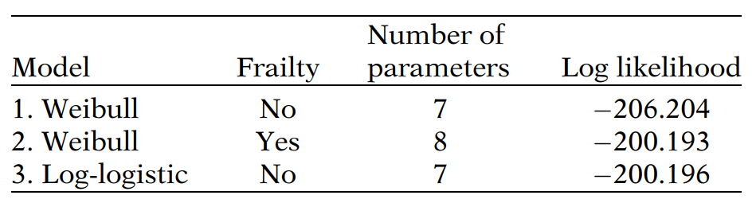
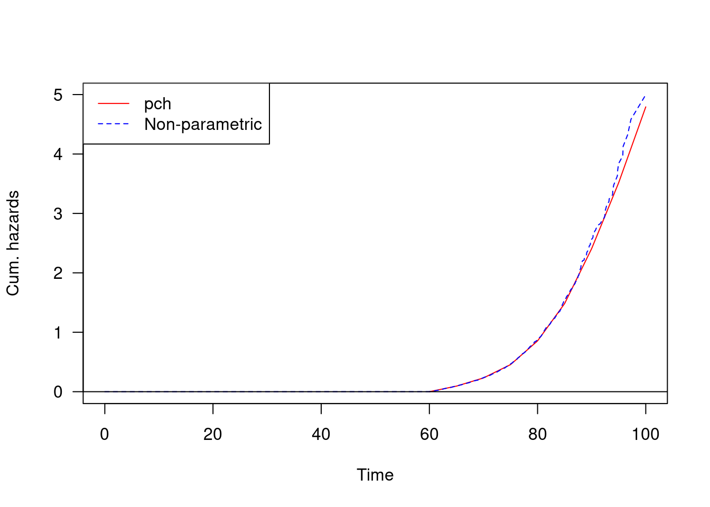

Chapter 8 More Topics on Survival Models
8.1 Setup working datasets
library(tidyverse)
library(knitr)
library(kableExtra)
library(eha)
library(survival)
library(data.table)
library(flextable)
library(survminer)
library(ggfortify)
library(ggplot2)
library(data.table)
library(coxme)
library(broom)oldmort01 <- oldmort
oldmort01$male <- relevel(oldmort01$sex, ref = "female")8.2 Why we call Cox model as semi-parametric model?
- The formulation of a likelihood function is based on the distribution of the outcome.
- The Cox PH model does not impose any assumption on the distribution of the outcome, time to event. It simply uses the observed order of the failure time. (thus, it is a partial likelihood)
- If any distributional assumption was imposed, then it is a parametric survival model.
- No assumption on \(h_0(t)\) + proportional hazard assumption
8.3 Why the Cox PH model is so popular
- The Cox PH model is a robust model, so that the results from using the Cox model will closely approximate the results for the correct parametric model.
- Even though the baseline hazard is not specified, reasonably good estimates of regression coefficients, hazard ratios of interest, and adjusted survival curves can be obtained for a wide variety of data situations.
- We would prefer to use a parametric model if we were sure of the correct model. However, we may not be completely certain that a given parametric model is appropriate.
- When in doubt, the Cox model is a “safe” choice.
- Along with “robustness”, the model specification of the Cox PH model has several good properties.
- The exponential part of this product ensures that the fitted model will always give estimated hazards that are non-negative. (vs. a linear model with negative coefficients)
- The measure of effect, which is called a hazard ratio, is calculated without having to estimate the baseline hazard function.
- With a minimum of assumption, we can obtain the primary information about a hazard ratio and a survival curve.
- As compared to logistic model, the Cox PH model incorporate the survival time and censoring information.
8.4 Adjusted Survival Curves using the Cox PH model
- Two primary quantities we are interested in the survival model are
- estimated hazard ratios
- esitmated surival curves
- In the Cox PH model,
- Hazard function: \(h(t, X) = h_0(t) \exp[\sum_{i=1}^p \beta_i X_i]\)
- Survival function: \(S(t, X) = [S_0(t)]^{\exp[\sum_{i=1}^p \beta_i X_i]}\)
- Therefore, estimated functions are
- Estimated Hazard function: \(\hat{h}(t, X) = \hat{h}_0(t) \exp[\sum_{i=1}^p \hat{\beta_i} X_i]\)
- Estimated survival function: \(\hat{S}(t, X) = [\hat{S}_0(t)]^{ \exp[\sum_{i=1}^p \hat{\beta_i} X_i]}\)
- To fit the estimated curves, a set of values for \(X_i\) should be specified. Most software uses the mean value (rather than median) of \(X\)s to calculate the adjusted for covariates.
8.5 Survival model selection7
Akaike’s information criterion (AIC) provides an approach for comparing the fit of models with different underlying distributions, making use of the -2 log likelihood statistic
- The AIC statistic is calculated as: -2 log likelihood + 2\(p\) (where \(p\) is the number of parameters in the model).
- A smaller AIC statistic suggests a better fit.
- The addition of 2 times \(p\) can be thought of as a penalty if nonpredictive parameters are added to the model.
- Nested vs. non-nested models (The likelihood ratio test for the nested model is considered a superior method to the AIC for comparing non-nested models)
Figure: “AIC Example”
- Likelihood ratio (LR) test: compute the difference between the log likelihood statistic of the reduced model (with fewer parameters to estimate) and the log likelihood statistic of the full model (with more parameters to estimate). In general, the LR statistic can be written in the form \(-2 ln L_R\) minus \(-2 ln L_F\), where \(R\) denotes the reduced model and \(F\) denotes the full model. The test statistic has a \(\chi ^2\) distribution with \(p\) degrees of freedom, where \(p\) denotes the number of additional parameters being assessed.
The exponential distribution is characterized by the fact that it lacks memory. In other words, items whose life lengths follow an exponential distribution do not age; no matter how old they are, if they are alive they are as good as new. This concept is not useful when it comes to human lives, but the life lengths of electronic components are often modeled by the exponential distribution in reliability theory.
If the exponential distribution is not useful in describing human lives, it may be so for short segments of life. At least it will be a good approximation if the segment is short enough. This is the idea behind the piecewise constant hazards distribution. Its definition involves a partition of time (age) axis, and one positive constant (the hazard level) corresponding to each interval. Note that the last interval will be open, with infinite length; only a finite number of cut points are allowed. The definition of the hazard function \(h(x)\) becomes, with the cuts denoted \(t=(t_1 < \cdots < t_n)\) and the levels denoted \(h=(h_1, \dots, h_{n+1})\):
\(h(t;t,h)= h_1 (t \ge t_1);\) \(h_i (t_{i_1} < t \ge t_i, i=2,\dots,n,);\) \(h_{n+1} (t_n<t)\)
- In this definition, the number of levels must be exactly one more than the number of cut points.
- Note that, despite the fact that the hazard function is not continuous, the other functions are. They are not differentiable at the cut points, though. The piecewise constant distribution is very flexible. It can be made arbitrarily close to any continuous distribution by increasing the number of cut points and choose the levels appropriately. Parametric proportional hazards modeling with the
pchdistribution is a serious competitor to the Cox regression model, especially with large data sets.
Piecewise constant hazards function
library(eha)
fit_pch <- eha::pchreg(Surv(enter, exit, event) ~ male + imr.birth + region,
cuts =seq(60, 100, by = 5),
data = oldmort01)
fit_np <- coxreg(Surv(enter, exit, event) ~ male + imr.birth + region,
data = oldmort01)
compHaz(fit_pch, fit_np)
The Weibull distribution is a very popular parametric model for survival data, described in detail by Waloddi Weibull (Weibull 1951), known earlier. It is one of the so-called extreme-value distributions, and as such very useful in reliability theory. It is becoming popular in demographic applications, but in mortality studies it is wise to avoid it for old age mortality (the hazard grows too slow) and mortality in ages 0–15 years of age (U-shaped hazards, which the Weibull model doesn’t allow).
The lognormal distribution is connected to the normal distribution through the exponential function: If \(X\) is normally distributed, then \(Y = \exp(X)\) is lognormally distributed. Conversely, if \(Y\) is lognormally distributed, then \(X = \log(Y)\) is normally distributed. The lognormal distribution has the interesting property that the hazard function is first increasing, then decreasing, in contrast to the Weibull distribution which only allows for monotone (increasing or decreasing) hazard functions.
The loglogistic distribution is very close to the lognormal, but have heavier tail to the right. Its advantage over the lognormal is that the hazard function has closed form.
The Gompertz distribution is useful for modeling old age mortality. The hazard function is exponentially increasing. The Gompertz distribution was generalized by (Makeham 1860) (the Gompertz—Makeham Distribution). The generalization consists of adding a positive constant to the Gompertz hazard function.
The Gamma distribution is another generalization of the exponential distribution. It is popular in modeling shared frailty.
When you have no idea of what the baseline hazard looks like, use Cox regression. Exponential regression can be used to fit models in whihc the hazard varies with time, and that may be a reasonable thing to do, expecially if you want to berify the fit of another parametric model. For instance, pretend that you habe strong reason to beliebe that the formulation outgh to be Weibull. Even after fitting a Weibull model, you could use the exponential model with dummy variables for interbals to verify that the Weibull fit was reasonable.
Which test should we use?8 There is no simple answer, so let us instead understand how to determine the answer in particular cases.
The advantage of the modeling-the-effect approaches is that you can control for the effects of other variables. For instance, we would know that patients vary in age, and we would know age also affects outcome. In a carefully controlled experiment, we could ignore that effect because the average ages (and the distribution of age) of the control and experimental groups would be the same.
The disadvantage of the modeling-the-effect approaches is that you could model the effect incorrectly in two ways. You could model incorrectly the effect of other variables, or you could mismodel the effect itself, for example, by stating its functional form incorrectly.
Effects of the form “apply the treatment and get an overall improvement” are often not simple. Effects can vary with other covariates (being perhaps larger for males than for females), and effects can vary with time, whcih is to say, aspects that change over time and that are not measured. For instance, a treatment might involve surgery, after whcih there may be a greater risk to be followed by a lesser risk in the future.
It is because of these concerns that looking at graphs is useful, whether you are engaging in parametric or semiparametric modeling (although, when doing semiparametric modeling, you can only indirectly look at the hazard function by looking at the cumulative hazard or survival function).
In most real circumstances, you will be forced into parametric or semiparametric analysis. Nonparametric analysis is useful when the experiment has been carefully controlled, although even controlled experiments are sometimes not adequately controlled. Nonparametric analysis is always a useful starting point. In nonexperimental situations in the presence of covariates, you do this more as a data description technique rather than in hopes of producing any final analysis that you can believe. You, as a researcher, should be able to describe the survival experience, say, as reflected in a graph of the survivor function or cumulative hazard function for your data, ignoring the complications of confounding variables and the like. Before disentangling reality, you need to be able to describe the reality that your are starting with.
So, our position is that you will likely be forced into parameterizing the effect. This is perhaps due more to our past analysis experiences. In a well-designed, controlled experiment, however, there is nothing wrong with not parameterizing the effect and stopping at nonparametric analysis.
If you do need to continue, should you parameterize the hazard function? On this issue, different researchers fell differently. We are favorable disposed to parametric analysis when you have good reason to believe that the hazard function ought to follow a certain shape. Imposing a hazard function is an excellent way of improving the efficiency of your estimates and helping to avoid being misled by the fortuity of chance. On the other hand, when you do not have a good deductive reasons to know the shape of the hazard, you should use semiparametric analysis.
When choosing between a semiparametric and parametric analysis, you much also take into consideration what information you are trying to obtain. In all you care about are hazard ratios (parameter effects) in a PH model, then you are probably better off with a semiparametric analysis. If you are interested in predicting the time to failure, however, some sort of parametric assumption as to the hazard is necessary. Here even if you do not have deductive knowledge as to the shape of the hazard, you can try all functional forms, to compare various functional forms of the hazard. You can use the piecewise exponential model to “nonparametrically” check the validity of any parametric form you wish to posit.
8.6 Likelihood and partial likelihood
8.6.1 Estimation of the Cox PH model using Maximum likelihood (ML)
- As with logistic regression, the ML estimates of the Cox model parameters are derived by maximizing a likelihood function, usually denoted as \(L\) (e.g., \(L(\beta)\)). \(L\) is a partial likelihood (rather than a complete likelihood function):
- considers probabilities only for subjects who fail
- does not consider probabilities for subjects who are censored
- More specifically, the model breaks down each failure time to calculate each likelihood, and then get the product of several likelihoods
\[L = L_1 \times L_2 \times L_3 \times \cdots \times L_k = \prod_{j=1}^k L_j, \text{ where } L_j= \text{portion of } L \text{for the } j^{th} \text{ failure time given the risk set of } R(t_{(f)})\] Once \(L\) is obtained, \(\ln L\) is maximized by solving \(\frac{\delta \ln L}{\delta \beta_i} = 0\) for \((i=1, 2, \cdots, p)\) (# of parameters) over iteration
8.6.2 More about Hazard ratio
Hazard ratio = \(e^{\hat{\beta}}\)
In general, a hazard ratio (HR) is defined as the hazard for one individual divided by the hazard for a different individual. The two individuals being compared can be distinguished by their values for the set of predictors, that is, the \(X\)’s vs. \(X^*\)’s. Therefore,
\[ \hat{HR} = \frac{\hat{h} (t, X^*)}{\hat{h} (t, X)} = \frac{h_0 (t) \exp(\sum_{i=1}^p \beta_i X_i^*)}{h_0 (t) \exp(\sum_{i=1}^p \beta_i X_i)} = \frac{\exp(\sum_{i=1}^p \beta_i X_i^*)}{\exp(\sum_{i=1}^p \beta_i X_i)} = \exp[{\sum_{i=1}^p \hat{\beta_i}(X_i^* - X_i)}]\] - Example: When \(X_1\) denotes (0, 1) exposure status, then \(X_1^*=1\), \(X_1=0\), thus
\[\hat{HR} = \exp[{\sum_{i=1}^p \hat{\beta_i}(X_i^* - X_i)}] = \exp[\hat{\beta_1}(1-0)]= \exp(\hat{\beta_1})\] - As with an odds ratio, it is easier to interpret an HR that exceeds the null value of 1 than an HR that is less than 1. Thus, the \(X\)’s are typically coded so that group with the larger hazard corresponds to \(X^*\), and the group with the smaller hazard corresponds to\(X\).
8.6.3 Maximum likelihood estimation
- Maximum likelihood estimation (MLE, ML) is a general approach to estimate that has become popular in many different areas of application.
- There are two reasons for this popularity.
- ML produces estimatros that have good large-sample properties. Provided that certain regularity conditions are met, ML estimators are consistent, asymptotically efficient, and asymptotically normal.
- Consistency: the estimates converge in probability to the true values as the sample gets larger, implying that the estimates will be approximately unbiased in large samples
- Asymptotically efficient: In large samples, the estimates will have standard errors that are approximately at least as small as those for any other estimation method
- Asymptotically normal: the sampling distribution of the estimates will be approximately normal in large samples, implying that we can use the normal and chi-square distributions to compute confidence intervals and p-values.
- It is often straightforward to derive ML estimators when there are no other obvious possibilities.
- One case is that ML handles nicely is data with censored observations. (OLS will leads to larger standard errors and there is little available theory to justify the construction of hypothesis tests or confidence intervals)
- ML produces estimatros that have good large-sample properties. Provided that certain regularity conditions are met, ML estimators are consistent, asymptotically efficient, and asymptotically normal.
- The basic principle of ML is to choose as estimates those values that will maximize the probability of observing what we have, in fact, observed.
- The first step is write down a formula for the probability of the data as a function of the unknown parameters (i.e., constructing the likelihood function)
- The second step is to find the values of the unknown parameters that maek the value of this formula as large as possible (i.e., maximization)
- MLE
Assume that we have \(n\) independent individuals \((j=1,2,\dots,n)\).
For each individual \(i\), the data consist of three parts: \(t_i\), \(\delta_i\), and \(x_i\), where
- \(t_i\) is the time of the event or the time of censoring;
- \(\delta_i\) is an indicator variable with a value of 1 if \(t_i\) is uncensored or 0 if right censored; and
- \(x_i = [1\; x_{i1}\; \dots \;x_{ik}]\) is a vector of covariates values (the 1 is for the intercept) (for simplicity, we treat them as fixed rather than random)
Suppose that all the observations are uncensored. Because we are assuming independence, it follows that the probability of the entire data is found by taking the product of the probabilities of the data for every individual. Because \(t_i\) is assumed to be measured on a continuum, the probability that it will take on any specific value is 0.
Instead, we represent the probability of each observation by the probability density function (p.d.f.), \(f(t_i)\). Thus, the probability (or likelihood) of the data is given by the following expression, where \(\prod\) indicates repeated multiplication: \[L=\prod_{i=1}^{n} f_i(t_i)\]
- Note that \(f_i\) is subscripted to indicate that each individual has a different p.d.f. that depends on the covariates.
To proceed further, we need to substitute an expression for \(f_i(t_i)\) that involves covariates and the unknown parameters.
- Before we do this, however, let’s see how this likelihood is altered if we have censored cases.
- If an individual is censored at time \(t_i\), all we know is that the individual’s event time is greater than \(t_i\). But the probability of an event time greater than \(t_i\) is given by the survivor function \(S(t)\) evaluated at time \(t_i\). Now suppose that we have \(r\) uncensored observations and \(n-r\) censored observations.
- If we arrange the data so that all the uncensored cases come first, we can write the likelihood as \[L=\prod_{i=1}^{r}f_i(t_i) \prod_{i=r+1}^{n} S_i(t_i)\]
- where, again, we subscript the survivor function to indicate that it depends on the covariates. Using the censoring indicator \(\delta\), we can equivalently write this as \[L=\prod_{i=1}^{n}[f_i(t_i)]^{\delta_i} [S_i(t_i)]^{1-\delta_i}\]
- Here \(\delta_i\) acts as a switch, turning the appropriate function on or off, depending on whether the observation is censored. As a result, we do not need to order the observations by censoring status. This last expression applies to all the models with right-censored data, shows how consored and uncensored cases are combined in ML estimation.
Once we choose a particular model, we can substitute appropriate expressions for the p.d.f. and the survivor function.
- For example, the exponential model is \(f_i(t_i) = \lambda_i e^{-\lambda_i t_i}\) and \(S_i(t_i)=e^{-\lambda_i t_i}\), where \(\lambda_i=\exp(-\beta x_i)\) and \(x_i\) is a vector of coefficients.
- Substituting, we get \[L=\prod_{i=1}^{n} [\lambda_i e^{-\lambda_i t_i}]^{\delta_i}[e^{-\lambda_i t_i}]^{1-\delta_i}=\prod\lambda_i^{\delta_i}e^{-\lambda_i t_i}\]
Although this expression can be maximized directly, it is generally easier to work with the natural logarithm of the likelihood function because products get converted into sums and exponents become coefficients. Because the logarithm is an increasing function, whatever maximizes the logarithm also maximizes the original function.
Taking the logarithm of the likelihood, we get \[\log L= \sum_{i=1}^{n} \delta_i \log \lambda_i - \sum_{i=1}^{n} \lambda_i t_i = -\beta \sum_{i=1}^{n} \delta_i x_i - \sum_{i=1}^{n} t_i e^{-\beta x_i}\]
Now we are ready for step 2, finding values of \(\beta\) that make this expression as large as possible. There are many different methods for maximizing functions like this. One well-known approach is to find the derivative of the function with respect to \(\beta\), set the derivative equal to 0, and then solve for \(\beta\).
- Taking the derivative and setting it equal to 0 gives us \[\sum_{i=1}^{n} \delta_i x_i = \sum_{i=1}^{n} x_i t_i e^{-\beta x_i}\]
- Because \(x_i\) is a vector, this is actually a system of \(k+1\) equations, one for each element of \(\beta\). While these equations are not terribly complicated, the problem is that they involve nonlinear functions of \(\beta\). Consequently, except in special cases (like a single dichotomous \(x\) variable), there is no explicit solution.
- Instead, we have to rely on iterative methods, which amount to successive approximations to the solution until the approximations converge to the correct value.
- Again, there are many different methods for doing this. All give the same solution, but they differ in such factors as speed of convergence, sensitivity to starting values, and computational difficulty at each iteration. (e.g., the Newton-Raphson algorithm)
8.6.4 Partial likelihood estimation
\[h_i(t)=h_0(t)\exp(\beta_1 x_1 + \beta_2 x_2 + \cdots + \beta_n x_n )\]
The likelihood function for the proportional hazards model of this equation can be factored into two parts:
- one part depends on both \(h_0(t)\) and \(\beta=[\beta_1, \beta_2,\dots,\beta_n]^{'}\), the vector of coefficients
- the other part depends on \(\beta\) \(=[\beta_1, \beta_2,\dots,\beta_n]^{'}\) alone
What partial likelihood does, in effect, is discard the first part and treat the second part - the partial likelihood function - as though it were an ordinary likelihood function. You get estimates by finding values of \(\beta\) that maximize the partial likelihood.
- Because there is some information about \(\beta\) in the discarded portion of the likelihood function, the resulting estimates are not fully efficient. There standard errors are larger than they would be if you used the entire likelihood function to obtain the estimates. In most cases, however, the loss of efficiency is quite small.
- What we gain in return is robustness because the estimates have good properties regardless of the actual shape of the baseline hazard function.
- To be specific, partial likelihood estimates still have two of the three standard properties of ML estimates: they are consistent and asymptotically normal. In other words, in large samples they are approximately unbiased and their sampling distribution is approximately normal.
- Another interesting property of partial likelihood estimates is that they depend only on the ranks of the event times, not their numerical values. This implies that any monotonic transformation of the event times will leave the coefficient estimates unchanged.
- For example, we could add a constant to everyone’s event time, multiply the result by a constant, take the logarithm, and then take the square root - all without producing the slightest change in the coefficients or their standard errors.
Now let’s take a closer look at how the partial likelihood works.
Using the same notation as MLE,
- Assume that we have \(n\) independent individuals \((j=1,2,\dots,n)\).
- For each individual \(i\), the data consist of three parts: \(t_i\), \(\delta_i\), and \(x_i\), where
- \(t_i\) is the time of the event or the time of censoring;
- \(\delta_i\) is an indicator variable with a value of 1 if \(t_i\) is uncensored or 0 if right censored; and
- \(x_i = [1 x_{i1} \dots x_{ik}\) is a vector of covariates values (the 1 is for the intercept) (for simplicity, we treat them as fixed rather than random)
we can write the partial likelihoods as a product of the likelihoods for all the events that are observed. Thus if \(J\) is the number of events, \[PL=\prod_{j=1}^{J}L_j\]
- where \(L_j\) is the likelihood for the \(J^{th}\) event.
Next we need to see how the individual \(L_J\)s are constructed. This is best explained by way of an example.
- First, we arrange data in ascending order by survival time, which is convenient for constructing the partial likelihood.
- Let’s say that the first death occurred to patient 1 in month 5. To construct the partial likelihood (\(L_1\)) for this event, we ask the following quetion: Given that a death occurred in month 5, what is the probability that it happened to patient 1 rather than to one of the other patients? The answer is the hazard for patient1 at month 5 divided by the sum of the hazards for all the patients who were at risk of death in that same month. At month 5, let all other 45 patients were at risk of death, so the probability is \[L_1=\frac{h_1(5)}{h_1(5)+h_2(5)+\dots +h_{45}(5)}\]
- The second death occurred to patient 2 in month 8. Again we ask, given that a death occurred in month 8, what is the probability that it occurred to patient 2 rather than to one of other patients ar risk? Patient 1 is no longer at risk of death bacuase she already died. So \(L_2\) has the same form as \(L_1\), but the hazard for patient 1 is removed from the denominator: \[L_2=\frac{h_2(8)}{h_2(8)+h_3(8)+\dots +h_{45}(8)}\]
- The set of all individuals who are at risk at a given point in time is often referred to as the risk set. At time 8, the risk set consists of patients 2 through 45, inclusive.
- We continue in this way for each successive death, deleting from the denominator the hazards for all those who have already died. Also deleted from the denominator are those who have been censored at an earlier point in time.
Until now, we made no assumptions about the form of the hazard function. Now, we invoke the proportional hazards model and substitute the expression for the hazard into the expression for \(L_1\), \[L_1=\frac{h_0(5)\exp[\beta x_1]}{h_0(5)\exp[\beta x_1]+h_0(5)\exp[\beta x_2]+\dots +h_0(5)\exp[\beta x_{45}]}\] where \(x_i\) is the value of \(x\) for the \(i^{th}\) patient.
- This leads to a considerable simplication because the unspecified function \(h_0(5)\) is common to every term in the expression. Canceling, we get
\[L_1=\frac{\exp[\beta x_1]}{\exp[\beta x_1]+\exp[\beta x_2]+\dots +\exp[\beta x_{45}]}\]
- It is this cancellation of the \(\lambda\)s that makes it possible to estimate the \(\beta\) coefficients without haveing to specify the baseline function.
- This leads to a considerable simplication because the unspecified function \(h_0(5)\) is common to every term in the expression. Canceling, we get
\[L_1=\frac{\exp[\beta x_1]}{\exp[\beta x_1]+\exp[\beta x_2]+\dots +\exp[\beta x_{45}]}\]
We can also test that the partial likelihood depends only on the order of the event times, not on their exact values.
- Although the first death occurred in month 5, \(L_1\) would be exactly the same if it had occurred at any time from 0 up to (but not including) 8, the month of the second event.
- Similarly, \(L_2\) would have been the same if the second death had occurred any time greater than 5 and less than 10 (the month of the third death).
Therefore, a general expression for the partial likelihood for data with time-invariant covariates from a proportional hazards model is \[PL=\prod_{i=1}^{n}[\frac{\exp(\beta x_i)}{\sum_{j=1}^{n} Y_{ij}\exp{\beta x_j}}]^{\delta_i}\]
- where \(Y_{ij}=1\) if \(t_j \le t_i\); and \(Y_{ij}=0\) if \(t_j < t_i\)
- The \(Y\)s are just a convenient mechanism for excluding from the denominator those individuals who have already experienced the event and are, thus, not part of the risk set.
- Although this expression has the product taken over all individuals rather than over all events, the terms corresponding to censored observations are effectively excluded because \(\delta_i=0\) for those cases.
- This expression is not valid for tied event times, but it does allow for ties between one event time and one or more censoring times.
Once the partial likelihood is constructed, we can maximize it with respect to \(\beta\) just like an ordinary likelihood, which is \[\log PL=\sum_{i=1}^{n} \delta_i [\beta x_i - \log \sum_{j=1}^{n} Y_{ij}\exp{\beta x_j}]\]
Most partial likelihood programs use some version of the Newton-Raphson alhorithm to maximize this function with respect to \(\beta\).
To account for the time-varying covariates9, we need to modify the partial likelihood function to accommodate these types of variables. Essentially, at each failure time, there are a certain number of patients at risk, and one fails. However, the contributions of each subject can change from one failure time to the next. The hazard function if given by \(h(t)=h_0 (t)e^{z_k(t_i)\beta}\), where the covariate \(z_k(t_i)\) is the value of the time-varying covariate for the \(k^{th}\) subject at time \(t_i\).
Sample of six patients from the Stanford heart transplant dataset
- The maximum partial likelihood is \[L(\beta)=\prod_{i=1}^{D} \frac{\psi_{ii}}{\sum\limits_{k \in R_i} \psi_{ki}}, \;\;\; where\;\; \psi_{ki}=e^{z_k(t_i)\beta} \]
- When the covariates were fixed at time 0, so that \(z_k(t_i)\)=\(z_k\) for all failure times \(t_i\), and the denominator at each time could be computed by, as time passes, successively deleting the value of \(\psi_i\) for the subject (or subjects) that failed at that time.
- With a time dependent covariate, by contrast, the entire denominator has to be recalculated at each failure time, since the values of the covariates for each subject may change from one failure time to the next.
- For example, the patient #2 is the first to fail, at \(t=5\). At this time, all six patients are at risk, but only one, patient #95, has had a transplant at this time. So the denominator for the first factor is \(5+e^{\beta}\), and the numerator is 1, since it was a non-transplant patient who died.
- Patient #12 is the next to die, at time \(t=7\), and none of the patients in the risk set have changed their covariate value.
- But when the third patient #95 dies at \(t=15\), one of the other patients (#10) has switched from being a non-transplant patient to one who has had one. There are now four patients at risk, of which two (#10 and #95) are transplant patients. The denominator is thus \(2+2e^{\beta}\) and the numerator is \(e^{\beta}\), since it was a transplant patient that died.
- Therefore, the full partial likelihood in this example is \[L(\beta)=\frac{1}{5+e^{\beta}}\cdot\frac{1}{4+e^{\beta}}\cdot\frac{e^{\beta}}{2+2e^{\beta}}\cdot\frac{1}{2+e^{\beta}}\cdot\frac{e^{\beta}}{1+e^{\beta}}\cdot\frac{e^{\beta}}{e^{\beta}}\]
- Essentially, this approach divides the time data for patients who had a heart transplant into two time periods, one before the transplant and one after.
- For example, patient #10 was a non-transplant patient from entry until day 11. Since that patient received a transplant at that time, the future for that patient, had he or she not received a transplant, is unknown. Thus, we censor that portion of the patient’s life experience at \(t=11\).
- Following the transplant, we start a new record for patient #10. This second piece of the record is left-truncated (i.e., patient’s survival experience with the transplant starts at that point) at time \(t=11\), and a death is recorded at time \(t=57\).
- For the first part of this patient’s experience, the ‘start’ time is 0, and the ‘stop’ time is 11, which is recorded as a censored observation. For the second piece of that patient’s experience, the start time is 11 and the stop time is 57.
- Thus, to put the sdata in start-stop format, the record of every patient with no transplant is carried forward as is, where as the record of each patient who received a transplant is split into pre-transplant and post-transplant records.
- Use “tmerge” in R to simplify this conversion.
Start-stop counting process
8.6.5 Dependence among the observations
- A common reaction to the methods described here is that there must be something wrong. In general, when multiple observations are created for a single individual, it’s reasonable to suppose that those observations are not independent, thereby violating a basic assumption used to construct the likelihood function. The consequence of dependence is usually biased standard error estimates and inflated test statistics. Even worse, there are different numbers of observations for different individuals, so some apper to get more weight than others.
- While concern about dependence is often legitimate, it is not applicable here. In this case, the creation of multiple observations in not an ad-hoc method; rather, it follows directly from factoring the likelihood function for the data. The basic idea is this: in its original form, the likelihood for data with no censoring can be written as a product of probabilities over all \(n\) observations, as follows: \[\prod_{j=1}{n} P(T_i = t_i)\] where \(T_i\) is the random variable and \(t_i\) is the particular value of observed for individual \(i\). Each of the probabilities can be factored in the following way. If \(t_i=5\), we have \[P(T_i=5)=P_{i5}(1-P_{i4})(1-P_{i3})(1-P_{i2})(1-P_{i1})\] where, again, \(P_{it}\) is the conditional probability of an event at time \(t\), given that an event has not already occurred. This factorization follows directly from the definition of conditional probability. Each of the five terms behaves as if it came from a distinct, independent observation.
- This lack of dependency holds only when no individual has more than one event. When events are repeatble, there is a real problem of dependence. But the problem is neither more nor less serious than it is for other methods fo survival analysis.
8.7 Tied or Discrete Data Analysis10
8.7.1 Example: Recidivism in the U.S.11
The dataset considered here is analyzed in Wooldridge (2002) and credited to Chung, Schmidt and Witte (1991). The data pertain to a random sample of convicts released from prison between July 1, 1977 and June 30, 1978. Of interest is the time until they return to prison. The information was collected retrospectively by looking at records in April 1984, so the maximum possible length of observation is 81 months. The data are available in binary format from the Stata website and consists of 1445 observations on 18 variables.
- workprg: an indicator of participation in a work program
- priors: the number of previous convictions
- tserved: the time served rounded to months
- felon: an indicator of felony sentences
- alcohol: an indicator of alcohol problems
- drugs:an indicator of drug use history
- black: an indicator for African Americans
- married: an indicator if married when incarcerated
- educ: the number of years of schooling, and
- age: in months.
- durat: represents time in months until return to prison or end of follow up
- cens: the censoring indicator and is coded 1 if the observation was censored (i.e. the individual had not returned to prison)
8.7.2 Data management
library(survival)
library(dplyr)
library(foreign)
recid <- read.dta("https://www.stata.com/data/jwooldridge/eacsap/recid.dta")## Warning in read.dta("https://www.stata.com/data/jwooldridge/eacsap/recid.dta"):
## cannot read factor labels from Stata 5 fileshead(recid)## black alcohol drugs super married felon workprg property person priors educ
## 1 0 1 0 1 1 0 1 0 0 0 7
## 2 1 0 0 1 0 1 1 1 0 0 12
## 3 0 0 0 0 0 0 1 1 0 0 9
## 4 0 0 1 1 0 1 1 1 0 2 9
## 5 0 0 1 1 0 0 0 0 0 0 9
## 6 1 0 0 1 0 0 1 0 0 1 12
## rules age tserved follow durat cens ldurat
## 1 2 441 30 72 72 1 4.276666
## 2 0 307 19 75 75 1 4.317488
## 3 5 262 27 81 9 0 2.197225
## 4 3 253 38 76 25 0 3.218876
## 5 0 244 4 81 81 1 4.394449
## 6 0 277 13 79 79 1 4.369448recid$fail <- 1 - recid$cens
recidx <- survSplit(recid, cut = seq(12, 60, 12),
start = "t0", end = "durat",
event = "fail",
episode = "interval")
labels <- paste("(",seq(0,60,12),",",c(seq(12,60,12),81), "]",sep="")
recidx <- mutate(recidx, exposure = durat - t0,
interval = factor(interval + 1, labels = labels))
mf <- Surv(durat, fail) ~ workprg + priors + tserved + felon +
alcohol + drugs + black + married + educ + age8.7.3 The treatment of ties
- Breslow’s method, the standard formular for partial likelihood estimation with tied data, is often a poor approximation when there are many ties.
- This problem was remedied by two exact methods, one that assumed that ties result from imprecise measurement and another that assumed that events really occur at the same (discrete) time.
- Efron’s method provides a good approximation to the exact methods.
8.7.3.1 The Exact method
Let’s begin with the exact method bacause its underlying model is probably more plausible for most application. Since events can occur at any point in time, it’s reasonable to suppose that ties are merely the result of imprecise measurement of time and that there is a true but unknown time ordering for the tied events.
If we knew that ordering, we could construct the partial likelihood in the usual way. In the absence of any knowledge of that ordering, however, we have to consider all the possibilities.
For example, with five tied events, there are \(5!=120\) different possible ordering.
- Let’s denote each of those possibilities by \(A_i\), where \(i=1, 2, \dots, 120\).
- What we want is the probability of the union of those possibilities, that is, \(P\)(\(A_1\) or \(A_2\) or \(\dots\) or \(A_{120}\)).
- Now the fundamental law of probability theory is that the probability of the union of a set of mutually exclusive event is just the sum of the probabilities for each of the events.
- Therefore, we can write, for example, the five tied event at \(L_8\) as \[L_8 = \sum_{i}^{120} p(A_i)\]
- Each of these 120 probabilities is just a standard partial likelihood.
- Suppose, for example, that we arbitrarily label the five events at time 8 with the numbers 8, 9, 10, 11, and 12, and suppose further that \(A_1\) denotes the ordering \({8, 9, 10, 11, 12}\). Then
- On the other hand, if \(A_2\) denotes the ordering \({9, 10, 11, 12}\), we have
- We continue in this way for the rest of the combinations.
8.7.3.2 The Breslow and Efron method
- Early recognition of these computational difficulties in the exact method led to the development of approximations.
- If the exact methods are too time-comsuming, use the Efron approximation. It is nearly always better than the Breslow method, with virtually no increase in computing time.
- Farewell and Prentice (1980) showed that the Breslow approximation deteriorates as the number of ties at a particular point in time becomes a large proportion of the number of cases at risk.
8.7.3.3 Comparisons
- Let us compare all available methods of handling ties. As is often the case, the Efron method comes closer to the exact partial likelihood estimate with substantial;y less computational effort, although in this application all methods yield very similar results.
cox_efron <- coxph(mf, data = recidx, ties="efron")
cox_beslow <- coxph(mf, data = recidx, ties="breslow")
cox_exact <- coxph(mf, data = recidx, ties="exact")
data.frame(exactp = coef(cox_exact),
efron = coef(cox_efron),
breslow = coef(cox_beslow))## exactp efron breslow
## workprg 0.111590748 0.111560134 0.111337070
## priors 0.096271298 0.095985297 0.095859808
## tserved 0.015595528 0.015558389 0.015519980
## felon -0.334451818 -0.333671514 -0.333261160
## alcohol 0.478596659 0.477865298 0.477164506
## drugs 0.327465984 0.327094665 0.326467040
## black 0.504462343 0.503957605 0.503016140
## married -0.153975705 -0.153542571 -0.153523788
## educ -0.024847512 -0.024770080 -0.024746660
## age -0.004199204 -0.004195258 -0.0041874218.8 The discrete method
The discrete method is also an exact method but one based on a fundamentally different model.
In fact, this is NOT a proportional hazard model at all. The model does fall within the framework of Cox regression, however, because it was proposed by Cox in his original 1972 paper and because the estimation method is a form of partial likelihood.
Unlike the exact model, which assumes that ties are merely the result of imprecise measurement of time, the discrete model assumes that time is really discrete.
When two or more events appear to happen at the same time, there is no underlying ordering - they really happened at the same time.
Cox’s model for discrete-time data can be described as follows. The time variable \(t\) can only take on integer values. Let \(P_{it}\) be the conditional probability that individual \(i\) has an event at time \(t\), given that an event has not already occurred to that individual.
This probability is sometimes called the discrete-time hazard. The model says that \(P_{it}\) is related to the covariates by a logistic regression equation: \[\log[\frac{P_{it}}{1-P_{it}}]=\beta_0 + \beta_1 x_1 + \cdots + \beta_i x_i\]
The expression on the left side of the equation is the logit or log-odds of \(P_{it}\). On the right side, we have a linear function of the covariates, plus a term \(\beta_0\) that is a set of constants that can vary arbitrarily from one time point to another.
This model can be described as proportional odds model. The odds that individual \(i\) has an event at time \(t\) (given that \(i\) did not already have an event) is \(O_{it}=\frac{P_{it}}{1-P_{it}}\).
The model implies that the ratio of the odds for any two individuals \(\frac{O_{it}}{O_{jt}}\) does not depend on time (although it may vary with covariates)
Estimation with partial likelihood: \(PL=\sum_{j=1}^{J} L_i\), where \(L_j\) is the partial likelihood of the \(j^{th}\) event.
- This approach can be very cumbersome. Let’s say that at time 1, 22 people had events out of 100 people who were at risk. To get \(L_1\), we ask the question: given that 22 events occurred, what is the probability that they occurred to these particular 22 people rather than to some different set of 22 people from among the 100 at risk? How many different ways are there of selecting 22 people out of a set of 100? It’s \(_{22} C_{ 100} = 7.3321 \times 10 ^{21}\)….
- In general, for a given set \(q\), let \(\psi_q\) be the product of the odds for all the individuals in that set. Thus, if the individuals who actually experienced events are labeled \(i=1\) to \(n\), we have \[\psi_1 = \prod_{i=1}^{n} O_{i1}\]
- We can then write \[L_1 = \frac{\psi_1}{\psi_1+\psi_2+ \cdots + \psi_q}\]
- This looks like a simple expression, but there are trillions of terms being summed in the denominator. Fortunately, there is a recursive algorithm that makes it practical, even with substantial numbers of ties.
Estimation with maximum likelihood method
- The basic approach
- Each individual’s survival history is broken down into a set of discrete time units that are treated as distinct observation
- After pooling these observations, the next step is to estimate a binary regression model predicting whether an event did or did not occur in each time unit
- Covariates are allowed to vary over time from one time unit to another
- This approach has two versions depending on the form of the binary regression model:
- By specifying a logit link, we get estimates of the discrete-time proportional odds model (this model is identical to the model estimates when we specify the “ties=discrete” in SAS PROC PHREG)
- By specifying a complementary log-log link, we get estimates of an underlying proportional hazard modeling continuous time. This is identical to the model that is estimated when we specify the “ties=exact” option in SAS PROC PHREG)
- Advantages
- This method does not rely on approximations
- The computations are manageable even with large data sets
- This method is particularly good at handling large numbers of time-dependent covariates
- This method makes it easy to test hypotheses about the dependence of the hazard on time
- This approach is similar to those of the piecewise exponential model and the counting process. The main difference is that those methods assumed that we know the exact time of the event within a given interval. By contrast, the discrete model presume that we know only that an event occured within a given interval.
- The basic approach
8.8.1 Continuous and Discrete Models12
Let’s have another look at the recidivism data. We will split duration into single years with an open-ended category at 5+ and fit a piecewise exponential model with the same covariates as Wooldridge.
We will then treat the data as discrete, assuming that all we know is that recidivism occurred somewhere in the year. We will fit a binary data model with a logit link, which corresponds to the discrete time model, and using a complementary-log-log link, which corresponds to a grouped continuous time model.
8.8.1.1 A Piecewise Exponential Model13
- This model is equivalent to the Poisson regression for a positive mean, which is a GLM assumes a Poisson distribution for \(Y\) and uses the log link function. GLMs for the Poisson mean can use the identity link, but it is more commone to model the log of the mean. Like the linear predictor \(\beta_0 + \beta_1 x_1\), the log of the mean can take any real-number value.
\[\log \mu = \beta_0 + \beta_1 x_1\]
The mean satisfies the exponential relationship \[\mu = \exp(\beta_0 + \beta_1 x_1) = \exp(\beta_0)\exp(\beta_1 x_1)\]
A one-unit increase in \(x\) has a multiplicative impact of \(\exp(\beta_1)\) on \(\mu\): the mean of \(Y\) at \(x+1\) equals the mean of \(Y\) at \(x\) multiplied by \(\exp(\beta_1)\). If \(\beta_1=0\), then \(\exp(\beta_1)=\exp(0)=1\) and the multiplicative factor is 1. Then, then mean of \(Y\) does not change at \(x\) changes. If \(\beta_1 >0\), then \(\exp(\beta_1)>1\), and the mean of \(Y\) increases as \(x\) increases. If \(\beta_1 <0\), then \(\exp(\beta_1)<1\), and the mean of \(Y\) decreases as \(x\) increases.
Overdispersion
- Count data often vary more than we would expect if the response distribution truly were Poisson. A common cause of overdispersion is heterogeneity among subjects. If the variance equals the mean wehn all relevant variables are controlled, it exceeds the mean wehn only a subset of those variables is controlled.
- Overdispersion is not an issue in ordinary regression models assuming normally distributed \(Y\), because the normal has a seperate parameter from the mean (i.e., the variance, \(\sigma^2\)) to describe variability. However, the variance equals the mean in the Poisson distribution, thus overdispersion is common in applying Poisson GLMs to counts.
Negative binomial regression
- When the Poisson means follw a gamma distribution, unconditionally the distribution is the negative binomial.
- The negative binomial is another distribution that is concentrated on the nonnegative integers. Unlike the Poisson, it has an additional parameter such that the variance can exceed the mean. \[E(Y)=\mu, \;\;\; Var(Y)=\mu + D\mu^2\]
- The index, \(D\), which is nonnegative, is called a dispersion parameter. The negative binomial distribution arises as a type of mixture of Poisson distributions. Greater heterogeneity in the Poisson means results in a larger value of \(D\). As \(D \to 0\), \(Var(Y) \to \mu\) and the negative binomial distribution converges to the Poisson variability.
- Negative binomial GLMs for counts express \(\mu\) in terms of explanatory variables. Most common is the log link, as in Poisson loglinear models, but sometimes the identity link is adequate. It is common to assume that the dispersion parameter \(D\) takes the same value at all predictor values, much as regression models for a normal response take the variance parameter to be constant.
mmf <- fail ~ interval + workprg + priors + tserved +
felon + alcohol + drugs + black + married + educ + age
pwe <- glm(mmf, offset = log(exposure), data = recidx, family = poisson)
coef(summary(pwe))## Estimate Std. Error z value Pr(>|z|)
## (Intercept) -3.830127469 0.280267334 -13.6659789 1.621090e-42
## interval(12,24] 0.036531989 0.109361775 0.3340471 7.383440e-01
## interval(24,36] -0.373815644 0.129611909 -2.8841150 3.925154e-03
## interval(36,48] -0.811543632 0.156401452 -5.1888497 2.115971e-07
## interval(48,60] -0.938231113 0.168321156 -5.5740534 2.488794e-08
## interval(60,81] -1.547177936 0.203348918 -7.6084886 2.773196e-14
## workprg 0.083829106 0.090794162 0.9232874 3.558575e-01
## priors 0.087245826 0.013473463 6.4753825 9.457203e-11
## tserved 0.013008862 0.001685901 7.7162667 1.197865e-14
## felon -0.283925203 0.106148770 -2.6747856 7.477705e-03
## alcohol 0.432442493 0.105721133 4.0904073 4.306163e-05
## drugs 0.274714115 0.097863462 2.8071162 4.998720e-03
## black 0.433555955 0.088362277 4.9065729 9.268154e-07
## married -0.154047742 0.109211869 -1.4105403 1.583802e-01
## educ -0.021416177 0.019444026 -1.1014271 2.707108e-01
## age -0.003580003 0.000522249 -6.8549738 7.132557e-128.8.1.2 A Logit Model
- For a discrete-time survival analysis we have to make sure we only include intervals with complete exposure, where we can classify the outcome as failure or survival. The convicts were released between July 1, 1977 and June 30, 1978 and the data were collected in April 1984, so the length of observation ranges between 70 and 81 months. We therefore restrict our attention to 5 years or 60 months. (We could go up to 6 years or 72 months for some convicts, but unfortunately we don’t have the date of release, so we can’t identify these cases and must censor everyone at 60.)
recidx <- filter(recidx, interval != "(60,81]")
logit <- glm(mmf, data = recidx, family = binomial) # no offset
coef(summary(logit))## Estimate Std. Error z value Pr(>|z|)
## (Intercept) -1.140802599 0.3084159337 -3.6989094 2.165279e-04
## interval(12,24] 0.030528163 0.1193582701 0.2557692 7.981291e-01
## interval(24,36] -0.413140262 0.1384064532 -2.9849783 2.835984e-03
## interval(36,48] -0.864148699 0.1639957690 -5.2693353 1.369186e-07
## interval(48,60] -0.993662524 0.1756321916 -5.6576332 1.534747e-08
## workprg 0.110988653 0.1003087410 1.1064704 2.685230e-01
## priors 0.099292063 0.0164653717 6.0303566 1.635983e-09
## tserved 0.014922136 0.0021429307 6.9634244 3.320994e-12
## felon -0.319662098 0.1178116529 -2.7133318 6.661038e-03
## alcohol 0.472499810 0.1184176515 3.9901130 6.604183e-05
## drugs 0.316729032 0.1086092071 2.9162264 3.542934e-03
## black 0.458027506 0.0973977193 4.7026512 2.568049e-06
## married -0.204807338 0.1204592720 -1.7002206 8.908944e-02
## educ -0.026725931 0.0215052145 -1.2427651 2.139544e-01
## age -0.004023087 0.0005840427 -6.8883431 5.644594e-128.8.1.3 A Complementary Log-log Model
Finally we use a complementary log-log link
cloglog <- glm(mmf, data = recidx, family = binomial(link = cloglog))
coef(summary(cloglog))## Estimate Std. Error z value Pr(>|z|)
## (Intercept) -1.238795113 0.2893607427 -4.2811444 1.859347e-05
## interval(12,24] 0.021613951 0.1095604758 0.1972787 8.436094e-01
## interval(24,36] -0.392613793 0.1297681301 -3.0255024 2.482204e-03
## interval(36,48] -0.824996440 0.1566132100 -5.2677321 1.381194e-07
## interval(48,60] -0.948338328 0.1684247392 -5.6306356 1.795467e-08
## workprg 0.104466422 0.0934228228 1.1182109 2.634769e-01
## priors 0.088706984 0.0145113085 6.1129556 9.780261e-10
## tserved 0.013266906 0.0018142064 7.3127875 2.616567e-13
## felon -0.288542238 0.1096491770 -2.6315039 8.500789e-03
## alcohol 0.439780479 0.1090998881 4.0309893 5.554258e-05
## drugs 0.299102966 0.1003895869 2.9794222 2.887925e-03
## black 0.427210098 0.0910947168 4.6897352 2.735589e-06
## married -0.183040394 0.1136073451 -1.6111669 1.071433e-01
## educ -0.023334468 0.0202349457 -1.1531767 2.488379e-01
## age -0.003851008 0.0005486362 -7.0192372 2.230827e-128.8.1.4 Comparison of Estimates
cbind(coef(pwe)[-6], coef(cloglog), coef(logit))## [,1] [,2] [,3]
## (Intercept) -3.830127469 -1.238795113 -1.140802599
## interval(12,24] 0.036531989 0.021613951 0.030528163
## interval(24,36] -0.373815644 -0.392613793 -0.413140262
## interval(36,48] -0.811543632 -0.824996440 -0.864148699
## interval(48,60] -0.938231113 -0.948338328 -0.993662524
## workprg 0.083829106 0.104466422 0.110988653
## priors 0.087245826 0.088706984 0.099292063
## tserved 0.013008862 0.013266906 0.014922136
## felon -0.283925203 -0.288542238 -0.319662098
## alcohol 0.432442493 0.439780479 0.472499810
## drugs 0.274714115 0.299102966 0.316729032
## black 0.433555955 0.427210098 0.458027506
## married -0.154047742 -0.183040394 -0.204807338
## educ -0.021416177 -0.023334468 -0.026725931
## age -0.003580003 -0.003851008 -0.004023087- As one would expect, the estimates of the relative risks based on the c-log-log link are closer to the continuous time estimates than those based on the logit link.
- This result makes sense because the piecewise exponential and c-log-log link models are estimating the same continuous time hazard, one from continuous and one from grouped data, while the logit model is estimating a discrete time hazard.
- Recall that in a continuous time model the relative risk multiplies the hazard or instantaneous failure rate, whereas in a discrete time logit model it multiplies the conditional odds of failure at a given time (or in a given time interval) given survival to that time (or the start of the interval). Interpretation of the results should take this fact into account.
All three approaches, however, lead to similar predicted survival probabilities.
8.8.2 Interval censoring14
Discrete data are often the result of interval-censoring. Events might happen in a continuous range of time, but they can only be observed at discrete moments (e.g., longitudinal data by waves).
- The modeling paradigm for interval-censored survival data is essentially the same as for non-interval-censored data. Interpretation and presentation of the results of a fitted proportional hazards model is identical for the two types of data.
- However, model building with interval-censored data uses the binary regression likelihood if intervals are the same for all subjects. This implies that model building details, such as variable selections, identification of the scale of continuous covariates, and inclusion of interactions, use techniques based on binary regression modeling with the complimentary log-log model.
8.8.2.1 Conditional logistic regression and stratified Cox model15
Under a particular data structure, the loglikelihood for a conditional logistic regression model is the same with loglikelihood from a Cox model. A stratified Cox model with each case/control group assigned to its own stratum, time set to a constant, status of 1=case 0=control, and using the exact partial likelihood has the same likelihood formula as a conditional logistic regression. The clogit routine creates the necessary dummy variable of times (all 1) and the strata, then calls coxph.
- Stratified Cox model
cox1 <- coxph(Surv(durat, fail) ~ workprg + married + educ + age + strata(black),
data = recidx, ties="efron")
coef(summary(cox1))## coef exp(coef) se(coef) z Pr(>|z|)
## workprg 0.156200755 1.1690609 0.0897549296 1.740303 8.180586e-02
## married -0.323341332 0.7237268 0.1133119425 -2.853550 4.323368e-03
## educ -0.049860264 0.9513624 0.0190833630 -2.612761 8.981412e-03
## age -0.001898137 0.9981037 0.0004532662 -4.187687 2.818123e-05- Conditional logistic model
clogit <- clogit(fail ~ workprg + married + educ + age + strata(black),
data = recidx, method=c("efron"))
coef(summary(clogit))## coef exp(coef) se(coef) z Pr(>|z|)
## workprg 0.151890146 1.1640324 0.0897545659 1.692283 9.059199e-02
## married -0.310120691 0.7333584 0.1132727550 -2.737822 6.184746e-03
## educ -0.047916781 0.9532131 0.0191298600 -2.504816 1.225151e-02
## age -0.001812212 0.9981894 0.0004512763 -4.015749 5.925726e-05Goran Brostrom, Event History Analysis with R; Kleinbaum and Klein, Survival Analysis↩︎
This section is a summary from Cleves et al, An Introduction to Survival Analysis Using Stata↩︎
Moore, Dirk. 2016. Applied Survival Analysis Using R↩︎
Allison, P. Survival Analysis Using SAS. \(2^{nd}\) eds.↩︎
Germán Rodríguez, Survival Analysis, https://data.princeton.edu/pop509/recid1↩︎
Germán Rodríguez, Survival Analysis, https://data.princeton.edu/pop509/recid3↩︎
Agresti, Categorical Data Analysis; Germán Rodríguez, Survival Analysis, https://data.princeton.edu/pop509/recid3↩︎
Hosmer, Remeshow, and May. Applied Survival Analysis↩︎
Conditional logistic regression. https://rdrr.io/cran/survival/man/clogit.html↩︎